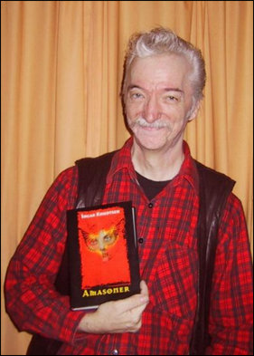

Brev til leserne – Uke 44, 2001:
Nærsyn og fjernsyn
Jeg nekter å høre på hylet om å ta parti for den ene eller den andre i konflikten som pågår i Afghanistan. Når to gangstergjenger slåss om territorier og “ære” skal man ta parti for de uskyldige forbipasserende som trekkes inn i konflikten, ikke for den ene eller den andre skurken.
Men en ting er sikkert, USA vinner IKKE på alle fronter. Bombing må ha meningsfylte mål for å kunne lykkes, i et utbombet og krigsherjet land som Afghanistan var det ikke stort som kunne bombes i utgangspunktet. Utenom naturligvis et sjukehus her og et gamlehjem der og en flyktningekolonne hist og en landsby pist.
Sjøl amerikanske media begynner å mumle om feighet, og at amerikanske soldater liksom skal være i krig, men samtidig ikke skal risikere livet?
Jeg har fått et par sure reaksjoner på det jeg skrev om Pakistans og USAs etterretningstjenester som arkitekter bak Osama Bin Laden & Co. Nå får jeg full oppbakking gjennom en godt dokumentert artikkel skrevet av Michel Chossudovsky:
http://globalresearch.ca/articles/CHO109C.html
En ting er likevel sikkert, de som mimrer om hvordan den kristne verden tapte korstogene og spår en gjentakelse ser bort fra at styrkeforholdet nok er endret siden den gang. Vesten kunne godt gjøre hele den såkalte “muslimske verden” til en parkeringsplass, det som hindrer det er ikke evnen, det er den politiske viljen. Eller rettere sagt hva politikerne til enhver tid tror de kan greie å slippe unna med!
At motstanden mot bombinga i vesten øker er naturligvis et politisk sunnhetstegn. En kan imidlertid frykte for hva som kan skje særlig i et så voldsorientert og våpencrazy land som USA dersom det skulle komme nye terrorangrep der.
Man utfordrer ikke en aggressiv og lunefull kjempe når man ikke har annet å stikke ham med enn nåler. Annet enn naturligvis dersom man tror man har Gud på sin side … Den fiktive kjempen som ingen har sett, men mange har hørt om og som antakelig kan utpekes som tidenes farligste og mest destruktive massepsykose fordi hver manns, hver gruppes, hver nasjons, hver makts handlinger kan rettferdiggjøres av overbevisningen om hellig medvirkning og rettferdighet.

Interessante tider? Ja, utvilsomt. For meg også i all beskjedenhet på det personlige og familiære plan. Og dere får bare tilgi meg at jeg akkurat nå er mest opptatt av det.
Ny bok kommer ut i disse dager Amasoner.
Så dermed er tida kommet for å vise den fram.
Og naturligvis si litt om boka og bakgrunnen for den, hvilke tanker jeg har gjort meg om det å skrive ei slik bok nå.
Etter at amasonene og en fortsettelse av historia om hva som skjedde med amasonesamfunnet i Atador har spøkt i hodet i mer enn ti år var det veldig godt å få noe ned på papiret. Samtidig måtte jo den nye boka være så frittstående som mulig, med tanke på hvor lang tid som er gått siden den første ble skrevet. Jeg tror jeg greide det også, men det var ikke bare lett.
Dette er nemlig den historia som naturlig skulle følge etter Våpensøstrene, grunnen til at det ikke ble slik var at jeg da jeg sendte M’Bela ut på reise i slutten av det jeg trodde skulle bli den eneste boka mi om amasonene, så var hun en så fascinerende og interessant person for meg at det ble viktigst å følge hennes liv da fortsettelsen skulle skrives.
Med Løvinnens sjel kom også den egentlig ganske ubehagelige erkjennelsen at sjøl heltinner og de jeg er mest glad i kan bli korrumpert av makt.
At forfall vil eksistere sammen med framgang. At sterke individer som Hizha og Bitka i den nye boka kan bli sett på som uroelementer av de som vil ha ro og ingen forandring, de som vil at i dag skal være som i går, at truende skyer i himmelranden ikke vil bringe storm dersom man bare ignorerer dem, at å kvitte seg med budbringerne er å kvitte seg med budet.
Det var også med et lite skjevt glis at jeg lot et forsvunnet sverd være en av katalysatorene i historia! Mer klassisk enn det makter jeg vel ikke å være. Jeg kan jo også kalle det å slutte fred med en klisjé jeg har hånet i årevis. Sjøl om jeg også nærer et fullstendig ubegrunnet håp om jeg dermed blir en av dem som setter et punktum for det å sende folk i stadig nye bøker på jakt etter graler, sverd, ringer og andre mer eller mindre ettertraktede og savnede magiske gjenstander.
Men det synes jo å være en så vesentlig del av fantasylitteraturen at den kanskje ikke overlever uten?

Jeg har med åra fått en økt forståelse for hvor mye av det som vi tror er nedlagt i menneskets “natur” eller innbiller oss har biologiske årsaker og begrunnelser rett og slett handler om roller og sosiale rollespill.
Ethvert samfunn har en tendens til å oppfatte seg sjøl som normalt og derved normerende og begrunne det både vitenskapelig og religiøst.
“Alle andre er gale, bare jeg er rett.”
Hadde amasonenes samfunn overlevd og blitt normerende for den såkalte vestlige sivilisasjon ville man i dag kanskje skrytt av at man denne gangen i Norge hadde førti prosent menn i regjeringa. Riktignok mest som ministre for såkalte mjuke departementer, men skitt, en kan jo ikke gå helt på tvers av tradisjonene heller.
Biologistene ville funnet farskjærlighetens gen, og mannlig aggressivitet og lunefullhet omtalt og ubetydeliggjort på samme måte som vårt samfunn har gjort med “hysteri” og premenstruelle aggresjoner.
Egentlig ganske søtt … ikke sant?
Jeg har forsøkt å skrive en antitrendy bok på mange måter. Vårt samfunn er nå så sexfiksert at jeg med boka har forsøkt å lage et lite fristed, et øyeblikk i tilværelsen, ei historie, der leseren kam ta seg fri fra detaljbeskrivelser av diverse former for mer eller mindre avansert utveksling av menneskelig slim.
Samtidig våger jeg å påstå at det er ei bok full av kjærlighet, vennskap og seksualitet!
Boka er historisk fantasy, i en tradisjon som ikke er anglo-amerikansk, men som like godt kan sies å ha røtter i en fortellertradisjon som i Norge hovedsakelig har befattet seg med vikingtid og middelalder.
Men den gode påvirkninga fra fantasylitteraturen er at denne litteraturen, enten den sjøl forstår det eller ikke, våger å ta magi, arketyper og guddommer som ikke er “Gud” på alvor og derved fratar både psykologene og prestene den makta de har ranet til seg og gir den tilbake til mysteriene, til heksene, til fantasi og drøm. Og i dette tilfellet også til heltinnene. De som mest av alt har blitt fortidd og gjort til heltenes tilbehør og belønning.
Uansett er jeg ganske sikker på at noen vil like boka, for jeg håper jo at jeg ikke skuffer alle de som har mast i årevis om en oppfølger til amasonetrilogien!
Denne boka er som sagt skrevet for å stå fritt på egne bein, men de som har lest trilogien vil nok nikke gjenkjennende både til personer og begivenheter og det samfunnet jeg beskriver.
At den andre, parallelle delen av handlinga dreier seg om ei ung jente i et patriarkalsk samfunn som drømmer om å bli kriger og som straffes hardt for det, det føyer seg vel pent inn i debattene om den brutale uretten mot kvinner som begås i nesten samme område av verden i dag! Og jeg minner for sikkerhets skyld om at boka ble skrevet lenge før dette var noe hett tema blant annet på grunn av at Afghanistan og Bin Laden og forskrudd religiøs fundamentalisme og misogyni generelt ble satt i verdens fokus.
En kan jo tillate seg å drømme i en slik sammenheng. Om at amasonenes samfunn fremdeles kunne eksistert i Kaukasus og Tyrkia, sterkt og rikt, og om hvordan dette kunne ha endret historias gang fullstendig.
En ting jeg vet jeg kommer til å møte både negative og positive reaksjoner for, det første særlig fra lesere som ikke er vant til min måte å skrive på, er den helt åpne slutten.
Men jeg er av den oppfatning at bøker skal ha en vesentlig likhet med livet, alle løse tråder skal ikke samles i en “slutt”, handlinga skal ikke være ferdig med siste punktum, spenninga skal ikke utløses i et litteraturorgastisk øyeblikk eller som en krimhistorie der detektiven samler alle de mistenkte på slutten og avslører hvordan alt “egentlig” var og hvem som er den skyldige.
Slutten er ikke slutten. Vil leserne ha en “slutt” så får de tenke videre på mulighetene, både de verste og de beste. Ei god bok slik jeg ønsker å skrive den skal helst leve videre i leseren, ikke som en tilfredstillelse, men som et spørsmål. Gjerne uten ende.
Hva mer skal jeg si? Hvis noen vil kan de jo spørre. Men les gjerne boka først.
Så mye som dette kan jeg ikke fortelle om og forklare den andre store kunstneriske begivenheten i den nære familie.

Noen av dere har kanskje alt har fått med seg at min kjære datter Toini og hennes Tomcats nye CD er ute, med tittelen Traction og med tretten splitter nye melodier i den musikalske tradisjonen som er blitt gruppas varemerke. IKKE som noen tror noe som har med nostalgi å gjøre, hvis man da ikke mener at all klassisk musikk er nostalgi, men en sammensmelting av eldre og nyere musikalske retninger som rockabilly, blues, rockballader, og et utall andre musikalske retninger.
Jeg vil egentlig kalle det god rock and roll, verken mer eller mindre. Og jeg innrømmer samtidig at jeg er svakest for de sangene på plata som lar Toini få vise hva hun er god for rent stemmemessig. Ikke nødvendigvis bare de roligste som “Dear Whoever”, men slike som “True love” og “Caught in a Storm”.
Anmeldelsene på Traction så langt har vært meget gode, og nå kan jo jeg bare håpe på at anmeldelsene på boka mi skal bli tilsvarende!
(Skjønt la meg tilføye at anmeldelser med “terningkast” hører ikke hjemme verken i litteratur eller musikk eller film, det er et uttrykk for anmelderfeighet, og jeg skulle virkelig ønske at dette uvesenet forsvant.)
Noen vil vel som vanlig se på forlagsnavnet og forfatternavnet på Amasoner og lete etter trygge og ufarliggjørende båser å putte det hele ned i. Forgjeves, får vi håpe. Hvis noen vil tro dette ikke er seriøs litteratur, så kan ikke jeg nekte dem den trua.
Litteratur- og musikkforståelse er også rollespill og har sine egne klisjeer og begrensninger som beveger seg på det ytre plan, og som hovedsakelig har med form og fasong å gjøre og som frykter avvik fra sjangere og båser og normer.
Som kjent, religiøsitet og hellighet finnes over alt. Noen kaller det for sikkerhets skyld Kultur, og det skal forestille å være unnskyldning nok for det meste.
Men skit i fundamentalistene. Eller på dem.
Hilsen og håndslag,